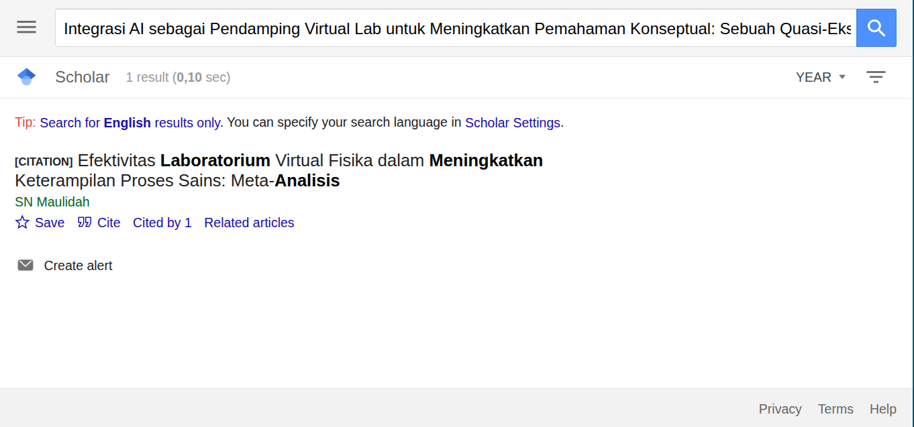
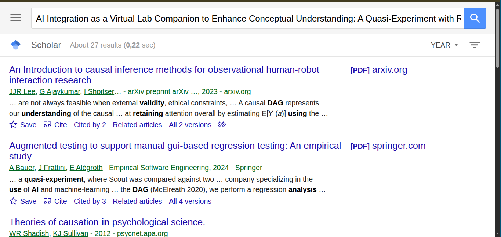

Nama: Firman Qashdus Sabil
NIM: 250321830676
| Judul & Reviewer | Metode Penelitian | Instrumen/ Data Penelitian | Hasil | Gap |
|---|---|---|---|---|
| A Graphical Catalog of Threats to Validity Linking Social Science with Epidemiology Muhammad Fikrul Akbar Suwahyu | Katalog 37 ancaman kevalidan (Campbell tradition) dan pemetaan ke DAG untuk menganalisis bias. | Representasi DAG untuk setiap ancaman; pembahasan ancaman internal/construct/external/statistical. | Menghubungkan ancaman metodologis klasik ke struktur kausal (DAG) sehingga memudahkan mitigasi lewat desain dan analisis. | Meskipun komprehensif, masih perlu contoh penerapan praktisnya di studi pendidikan-AI (mis. menilai collider bias dari self-selection pengguna AI dalam kelas). |
| A systematic literature review of artificial intelligence (AI) in secondary school physics: applications, benefits, and challenges Firman Qashdus Sabil | Systematic Literature Review (PRISMA) pada artikel 2020–2024, screening ganda, ekstraksi data ke spreadsheet terbuka. | Basis data bibliografis (Scopus, WoS), coding sheet untuk: aplikasi AI, manfaat, tantangan; alat penilaian kualitas studi (critical appraisal tools). | AI menjanjikan personalisasi (adaptive systems, ITS), virtual labs, dan tutoring (LLM) untuk fisika menengah; manfaat: peningkatan keterlibatan dan diferensiasi; tantangan: kesiapan guru, privasi data, dan risiko ketergantungan AI (mengurangi berpikir kritis). | Sedikit bukti jangka panjang tentang dampak AI terhadap kemampuan berpikir kritis dan pemecahan masalah di fisika; juga kurang studi yang menguji integrasi AI + virtual labs di konteks sekolah menengah dengan desain eksperimental jangka panjang. |
| Quantitative Research Excellence: Study Design and Reliable and Valid Measurement of Variables Nafila Lana Amalia | Artikel pedagogis/metodologis yang merangkum desain kuantitatif (P-exp, Q-exp, EXP) dan validitas/ reliabilitas instrumen. | Diskusi tentang power calculation, ancaman bias, validitas pengukuran, reliability testing, dan praktek pelaporan. | Panduan praktis untuk merancang studi kuantitatif berkualitas: hitung sampel (power), atasi ancaman bias, laporkan prosedur dan validasi instrumen. | Aplikasi khusus ke konteks pendidikan fisika + AI memerlukan adaptasi instrumen (mis. validasi rubrik penilaian interaksi AI, log data). |
| Experimental research on enhancing effectiveness in teaching the nature of seasons Alfi Mufidah | Eksperimen dengan kelompok kontrol & eksperimen (pre/post/retensi), analisis ANOVA berulang; peserta: siswa kelas 8 (n ≈ 148). Model pengajaran berbasis physical model (CAEFUS). | tes pilihan berganda untuk pencapaian (SEMAT), analisis gambar/drawing (EFA pada gambar siswa), lembar retensi, rubrik coding hasil gambar. | Efek besar untuk kelompok eksperimen (peningkatan pre→post→retensi; ANOVA signifikan, η² besar), menunjukkan physical models efektif untuk konsep abstrak (seasons). | Fokus pada model fisik; kurang penelitian yang menguji kombinasi model fisik + teknologi (VR atau AI tutor) untuk transfer konsep yang lebih kompleks atau pada topik fisika lain (mis. elektromagnetisme). |
| Discovering Internal Validity Threats and Operational Concerns in Single‐Case Experimental Designs Through Directed Acyclic Graphs Melly Yuni Anjani | Tinjauan teori-metodologis; aplikasi Directed Acyclic Graphs (DAGs) untuk mengidentifikasi ancaman validitas internal dan masalah operasional pada SCED (single-case experimental designs). | Representasi DAG, diskusi desain SCED (replikasi, randomisasi), contoh-contoh masalah operasional (trend baseline, outliers, attrition). | DAG membantu menjelaskan mengapa replikasi dan randomisasi memperbaiki inferensi kausal dan juga menyorot bahwa SCED tetap rentan pada isu operasional; DAG berguna untuk merencanakan mitigasi bias. | Penerapan DAG pada studi pendidikan eksperimental (termasuk fisika) masih relatif baru — ada peluang menggabungkan DAG untuk perencanaan dan analisis studi pendidikan berbasis AI/virtual labs. |
| Improving reporting standards in quantitative educational intervention research: introducing the CLOSER and CIDER checklists Alfi Mufidah | Pengembangan checklist (Delphi + adaptasi), CLOSER (34 item) untuk pelaporan studi pendidikan kuantitatif dan CIDER (17 item) untuk deskripsi intervensi. | Checklists (CLOSER, CIDER) — dipakai untuk menilai dan memperbaiki laporan intervensi pendidikan. | Checklist ini mengisi celah pelaporan di penelitian pendidikan (sering buruk bila memakai CONSORT/TIDieR yang bukan untuk konteks pendidikan). Merekomendasikan penggunaan checklist agar studi mudah direplikasi. | Belum secara luas diadopsi — penelitian eksperimental di pendidikan (termasuk yang memanfaatkan AI) sebaiknya mengikuti CLOSER/CIDER untuk meningkatkan transparansi. |
Terdapat beberapa hasil menarik dari artikel-artikel di atas:
- AI, virtual labs, dan adaptive ITS punya potensi nyata untuk meningkatkan pemahaman konseptual di topik fisika yang abstrak (SLR & studi terapan).
- Peluang penggabungan desain kuantitatif (pre/post/retensi) dengan prosedur kualitas (validasi instrumen, CLOSER/CIDER) + menggunakan DAG/kerangka ancaman validitas untuk merencanakan mitigasi bias dan jika sampel kecil, misalnya SCED dengan DAG.
Usulan Judul:
Integrasi AI sebagai Pendamping Virtual Lab untuk Meningkatkan Pemahaman Konseptual: Sebuah Quasi-Eksperimen dengan Analisis Retensi dan Validitas Menggunakan DAG
AI Integration as a Virtual Lab Companion to Enhance Conceptual Understanding: A Quasi-Experiment with Retention and Validity Analysis Using DAG
SLR & studi quasi-eksperimental menunjukkan AI/ChatGPT mendukung pemahaman konsep abstrak (termodinamika, fisika) tetapi ada gap pada topik lain dan retensi; menggabungkan virtual lab (visualisasi) + ChatGPT (explanations, prompting) menargetkan kelemahan pemahaman medan/konsep abstrak di fisika. Dapat digunakan DAG untuk memformalkan asumsi kausal dan CLOSER/CIDER + praktik validitas untuk pelaporan.
 